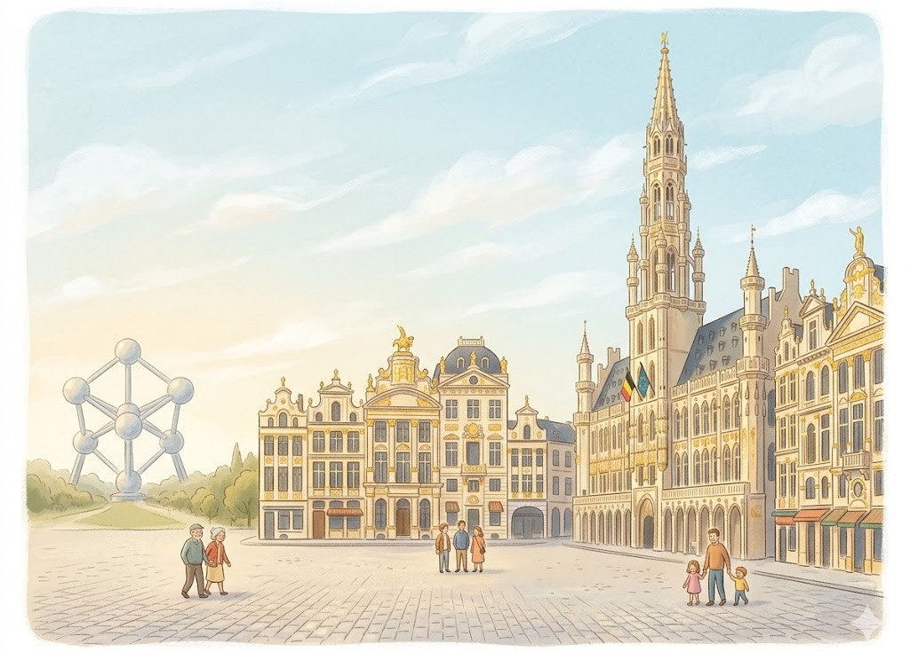
Hier stehen die wichtigsten Daten zu deinem Land. In der App baust du daraus deinen eigenen Steckbrief.
| Hauptstadt | Brüssel |
| Kontinent | Europa |
| Sprache | Niederländisch, Französisch und Deutsch |
| Währung | Euro |
| Einwohner | rund 11,8 Millionen Menschen |
| Fläche | 30.667 km². Belgien ist winzig, etwa zwölfmal kleiner als Deutschland. |
| Großer Berg | Signal de Botrange, 694 Meter hoch. Das ist nur ein flacher Hügel, kein echter Berg. |
| Nachbarländer | Frankreich, Deutschland, Luxemburg und die Niederlande |
In Belgien gibt es viele berühmte Orte. Diese vier solltest du kennen.
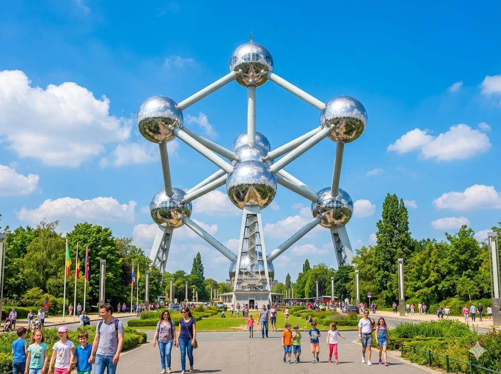
Das AtomiumDas Atomium steht in Brüssel. Es sieht aus wie ein riesiger Baustein aus Metall. Neun große Kugeln sind durch Röhren verbunden. Du kannst mit dem Aufzug hinauffahren. Von oben hast du einen tollen Blick über die Stadt.
Grüne Wörter für die AppAtomiumBrüsselgroße KugelnRöhren verbundenBlick über die Stadt
Der Grote MarktDer Grote Markt ist der große Marktplatz von Brüssel. Rund um den Platz stehen prächtige alte Häuser. Sie haben goldene Verzierungen an der Wand. In der Mitte steht ein hohes Rathaus mit Turm. Viele Menschen machen hier Fotos.
Grüne Wörter für die AppGrote MarktMarktplatz von Brüsselprächtige alte Häusergoldene Verzierungenhohes Rathaus
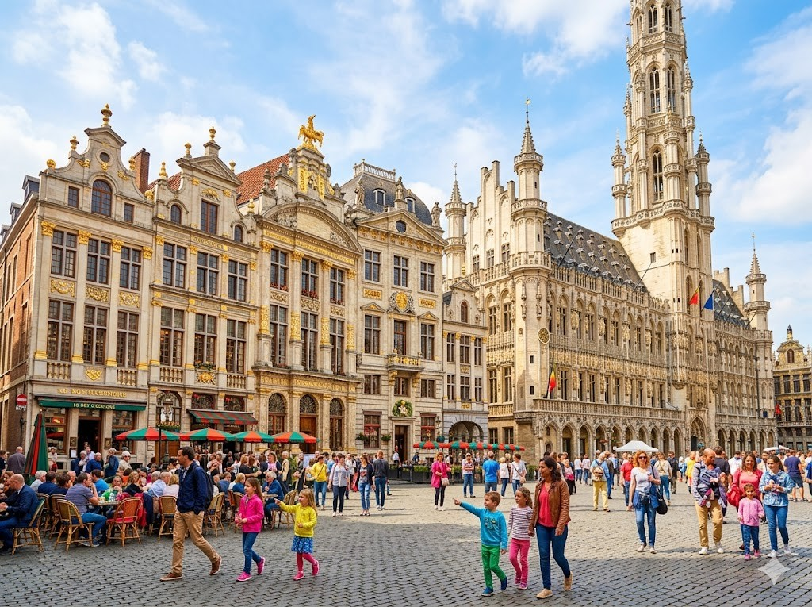
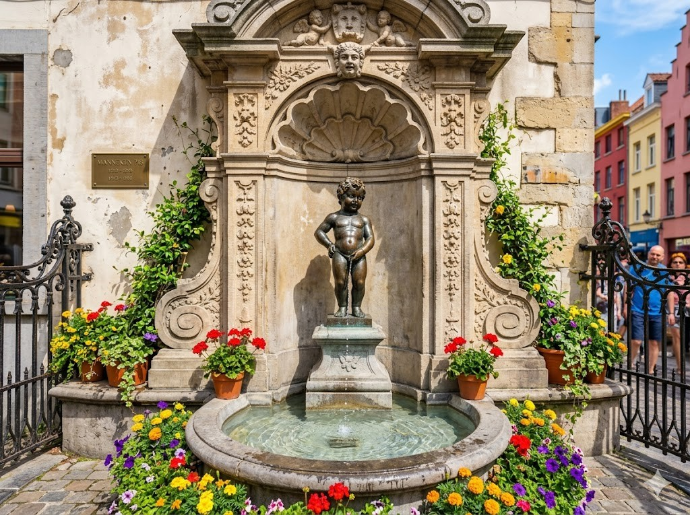
Manneken PisManneken Pis ist eine kleine Figur in Brüssel. Sie zeigt einen pinkelnden Jungen aus Bronze. Die Figur ist nur etwa so groß wie ein Baby. Oft bekommt sie lustige Kostüme angezogen. Viele Touristen wollen sie sehen.
Grüne Wörter für die AppManneken Piskleine Figurpinkelnden Jungenlustige KostümeTouristen
Die Altstadt von BrüggeBrügge ist eine alte Stadt mit vielen Wasserwegen. Diese Wasserwege heißen Grachten. Du kannst mit dem Boot durch die Stadt fahren. Über die Grachten führen viele kleine Brücken. Brügge sieht aus wie im Märchen.
Grüne Wörter für die AppBrüggeWasserwegeGrachtenBoot durch die Stadtkleine Brücken
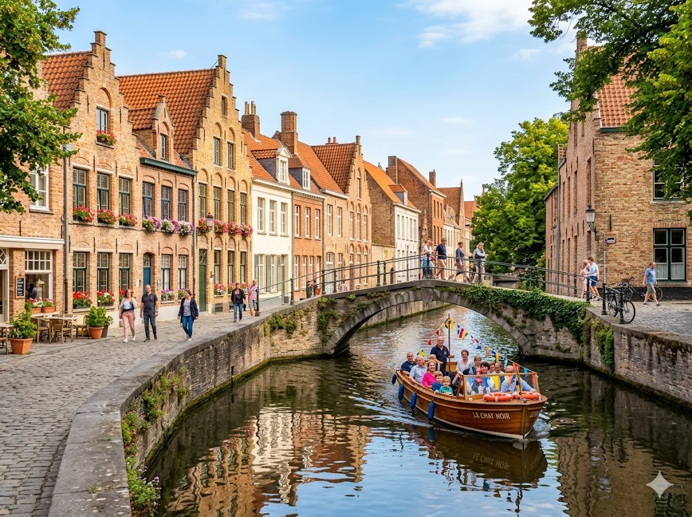
Diese Tiere leben in Belgien und sind ganz besonders.
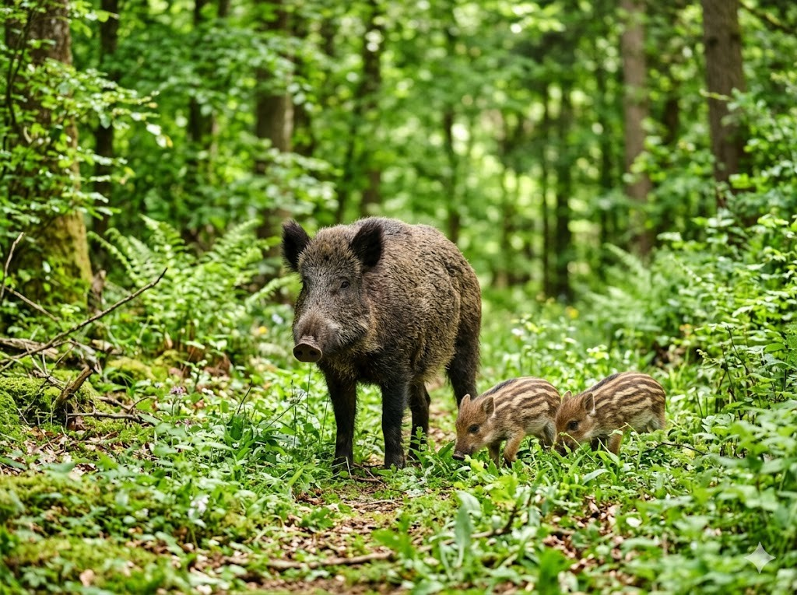
Das WildschweinIn den Wäldern der Ardennen leben Wildschweine. Die Ardennen sind eine hügelige Waldgegend im Süden von Belgien. Wildschweine haben ein borstiges Fell. Sie wühlen mit der Schnauze im Boden nach Futter. Die kleinen Frischlinge haben gestreiftes Fell.
Grüne Wörter für die AppWäldern der ArdennenWildschweineborstiges FellwühlenFrischlinge
Der RothirschAuch der Rothirsch lebt in den Ardennen. Er ist ein großes Tier mit langen Beinen. Die Männchen tragen ein mächtiges Geweih auf dem Kopf. Im Herbst hört man die Hirsche laut röhren. So rufen sie nach den Weibchen.
Grüne Wörter für die AppRothirschArdennenlangen Beinenmächtiges Geweihlaut röhren
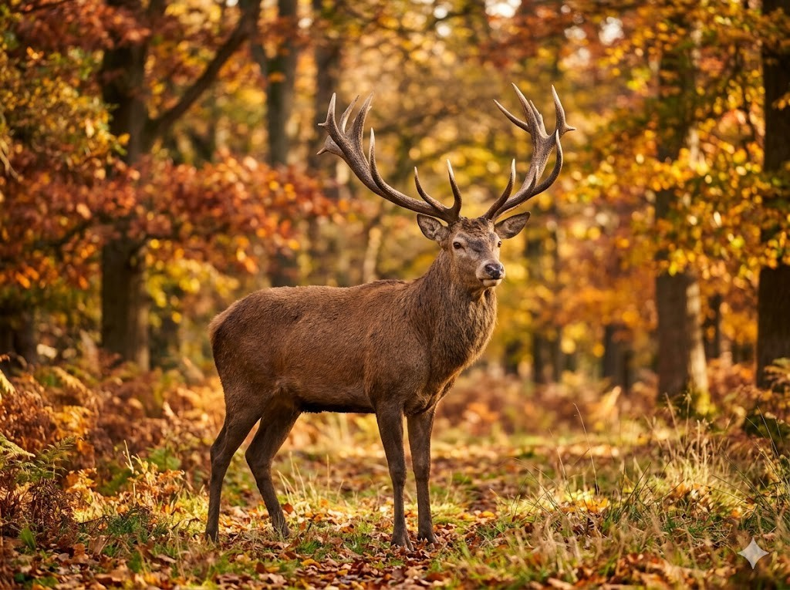
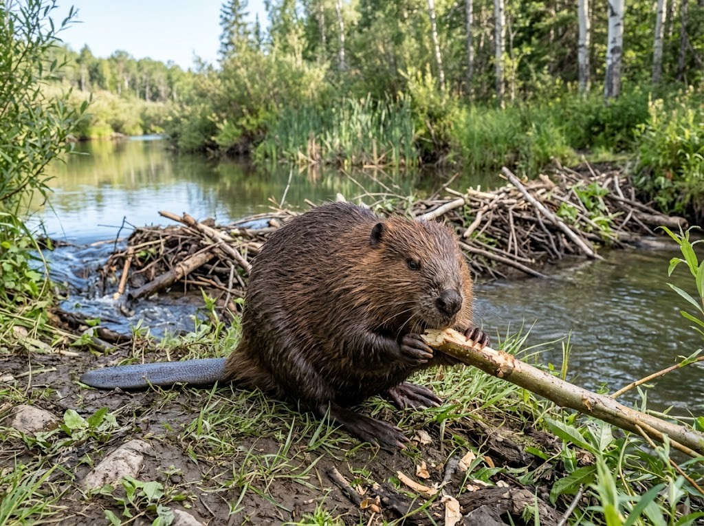
Der BiberAn den Flüssen der Ardennen lebt der Biber. Er ist ein fleißiges Nagetier mit dichtem Fell. Sein Schwanz ist flach wie ein Paddel. Der Biber fällt Bäume mit seinen scharfen Zähnen. Aus den Ästen baut er kleine Dämme im Wasser.
Grüne Wörter für die AppBiberNagetierSchwanz ist flachscharfen Zähnenkleine Dämme
In der App kannst du beim Essen das Foto nehmen oder dein Gericht selbst malen.
Pommes fritesDie Pommes frites wurden in Belgien erfunden. Die Belgier sind sehr stolz darauf. Man kauft sie an kleinen Buden auf der Straße. Dazu isst man sie oft mit Mayonnaise. Sie schmecken außen knusprig und innen weich.
Grüne Wörter für die AppPommes fritesin Belgien erfundenkleinen Budenmit Mayonnaiseknusprig
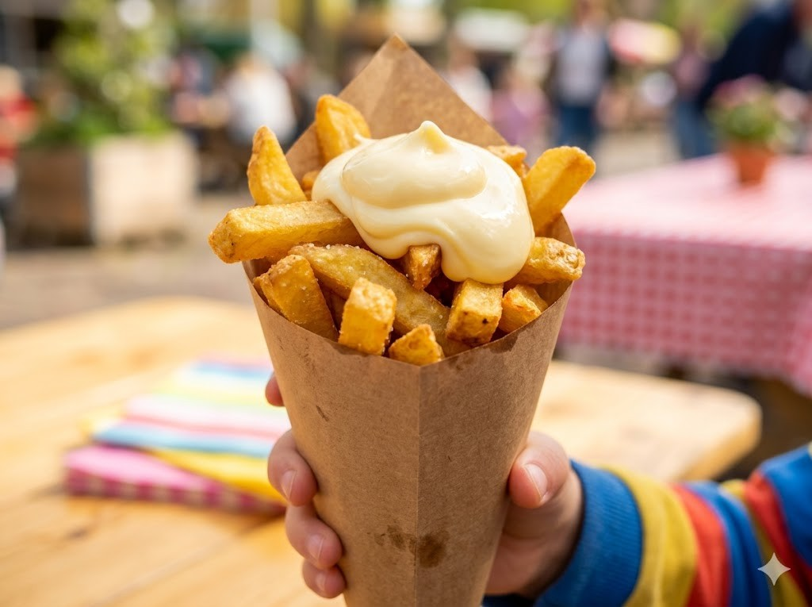
Belgische WaffelnBelgische Waffeln sind in der ganzen Welt bekannt. Sie sind dick und haben tiefe Mulden. Man bestreut sie gern mit Puderzucker. Manche essen sie auch mit Schokolade oder Früchten. Frisch und warm schmecken sie am besten.
Grüne Wörter für die AppBelgische Waffelntiefe MuldenPuderzuckermit SchokoladeFrisch und warm
Schokolade und PralinenBelgien ist berühmt für feine Schokolade. In vielen Städten gibt es kleine Schokoladenläden. Dort werden zarte Pralinen verkauft. Die Pralinen sind oft mit einer süßen Füllung. Sie schmecken besonders cremig und lecker.
Grüne Wörter für die Appfeine SchokoladeSchokoladenlädenPralinensüßen Füllungcremig
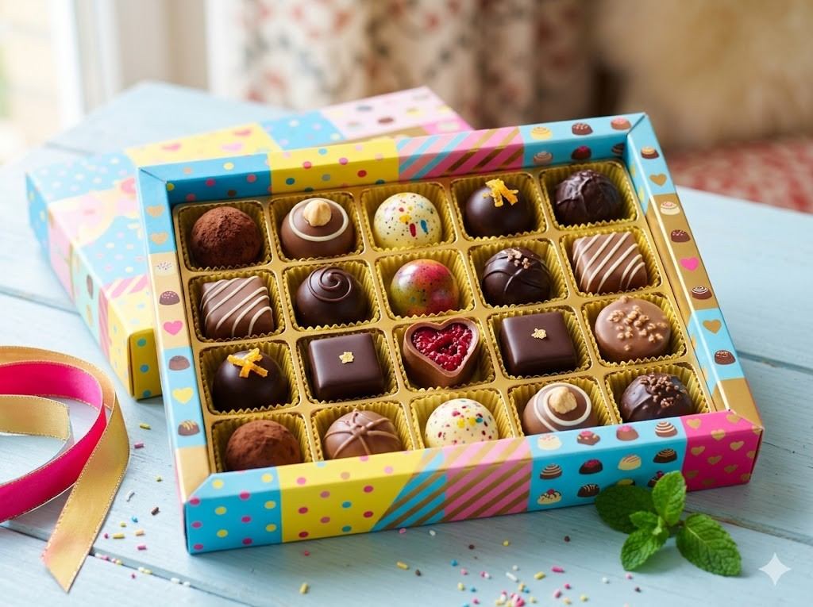
Die Nationalmannschaft von Belgien heißt die Roten Teufel. Belgien hat sich für die WM 2026 qualifiziert. Der bekannteste Spieler ist Kevin De Bruyne. Er spielt heute beim Verein SSC Napoli in Italien. De Bruyne kann den Ball ganz genau zu seinen Mitspielern schießen.
Grüne Wörter für die Appdie Roten TeufelWM 2026Kevin De BruyneSSC Napoligenau
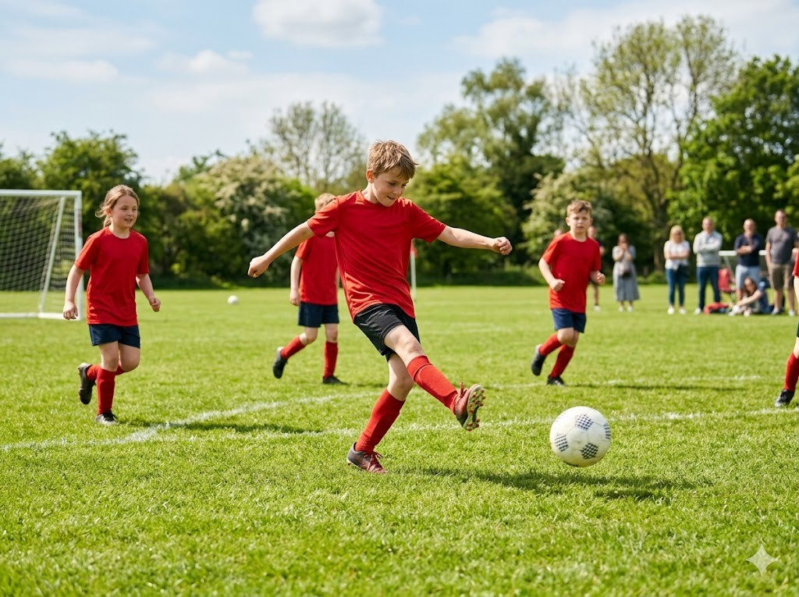
Die Schule in BelgienIn Belgien spricht man mehrere Sprachen. Im Norden lernen die Kinder auf Niederländisch. Im Süden lernen sie auf Französisch. Manche Kinder sprechen auch Deutsch. Viele lernen schon früh eine zweite Sprache.
Grüne Wörter für die Appmehrere Sprachenauf Niederländischauf Französischauch Deutschzweite Sprache
Comics aus BelgienBelgien ist das Land der Comics. Viele bekannte Comicfiguren kommen von hier. Tim und Struppi sind in Belgien erfunden worden. Auch die kleinen blauen Schlümpfe stammen aus Belgien. Kinder lesen die bunten Comics sehr gern.
Grüne Wörter für die AppLand der ComicsComicfigurenTim und Struppiblauen Schlümpfebunten Comics
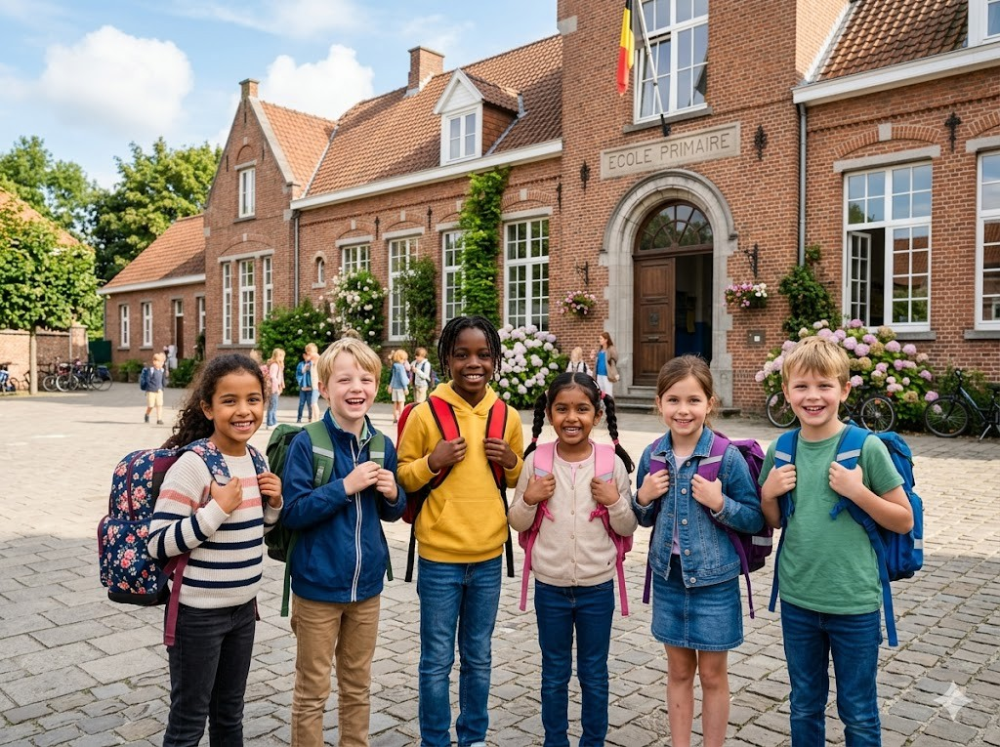